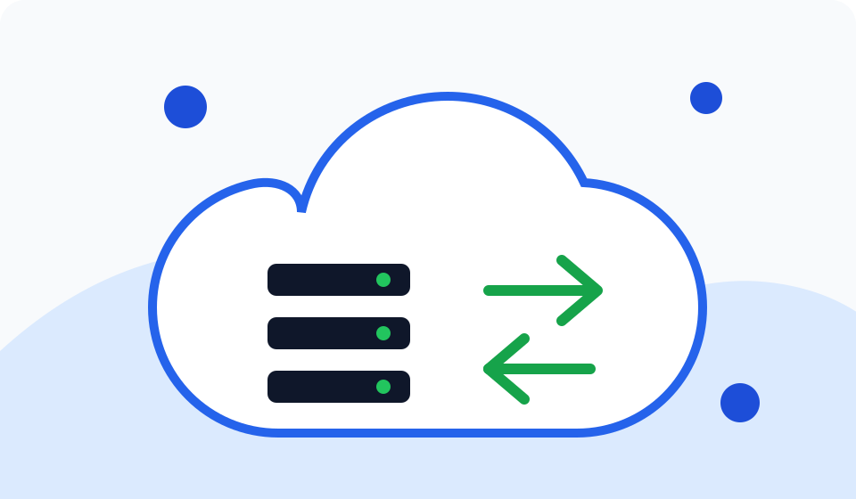
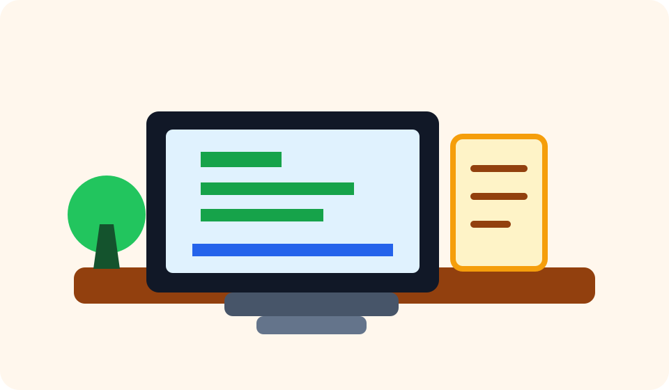
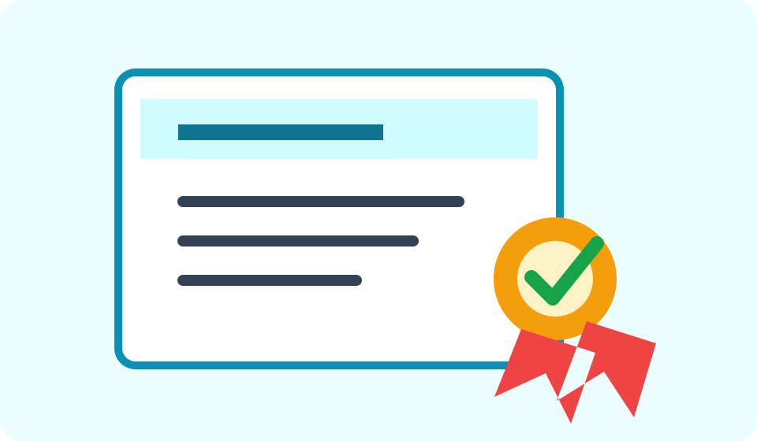

Deskripsi Diri
Saya adalah pribadi yang tertarik pada dunia teknologi, terutama bagaimana sebuah aplikasi bisa berjalan stabil, aman, dan mudah dikembangkan melalui proses deployment yang baik. Saat ini saya aktif belajar dasar-dasar cloud computing, penggunaan server Linux, Git, Docker, dan konsep pipeline otomatis untuk mendukung pekerjaan sebagai Cloud Engineer atau DevOps Engineer.
Tujuan saya adalah bisa bekerja secara remote atau mengambil proyek freelance yang berhubungan dengan infrastruktur, website deployment, monitoring, dan otomasi. Saya percaya kemampuan teknis harus berjalan bersama komunikasi yang jelas, dokumentasi yang rapi, serta kemauan untuk terus belajar dari proyek kecil sampai proyek besar.
Saya terbiasa belajar secara mandiri, membuat catatan, dan mengubah materi belajar menjadi proyek nyata. Prinsip saya sederhana: belajar, praktik, dokumentasikan, lalu tingkatkan.
Data Pribadi
| Keterangan | Informasi |
|---|---|
| Nama | Aldi |
| Minat Karier | Cloud Engineer, DevOps Engineer, Remote Worker |
| Lokasi | Indonesia |
| aldi.aldi059805@gmail.com |
Riwayat Pendidikan
| Tahun | Pendidikan |
|---|---|
| 2016 | SMK GLOBAL PEKANBARU |
| 2013 | SMP TRI BHAKTI |
| 2010 | SDN 008 |
Target Belajar
- Membuat website portofolio dan menaruhnya di GitHub.
- Deploy website ke cloud server atau layanan hosting modern.
- Membuat pipeline otomatis untuk build dan deployment.
- Mempelajari monitoring, logging, dan keamanan dasar server.
Proyek dan Minat

Cloud Deployment
Mempelajari cara menjalankan website di server dan mengelola proses deployment secara bertahap.

Remote Work
Menyiapkan portofolio, komunikasi proyek, dan dokumentasi agar siap bekerja jarak jauh.

Continuous Learning
Belajar konsisten melalui latihan, kursus online, dan pembuatan proyek nyata.
Link Penting
Kontak
Terbuka untuk belajar bersama, mengerjakan proyek kecil, dan membangun portofolio Cloud/DevOps secara bertahap.
Terima kasih sudah melihat CV saya. Mari terhubung dan berdiskusi tentang proyek teknologi.